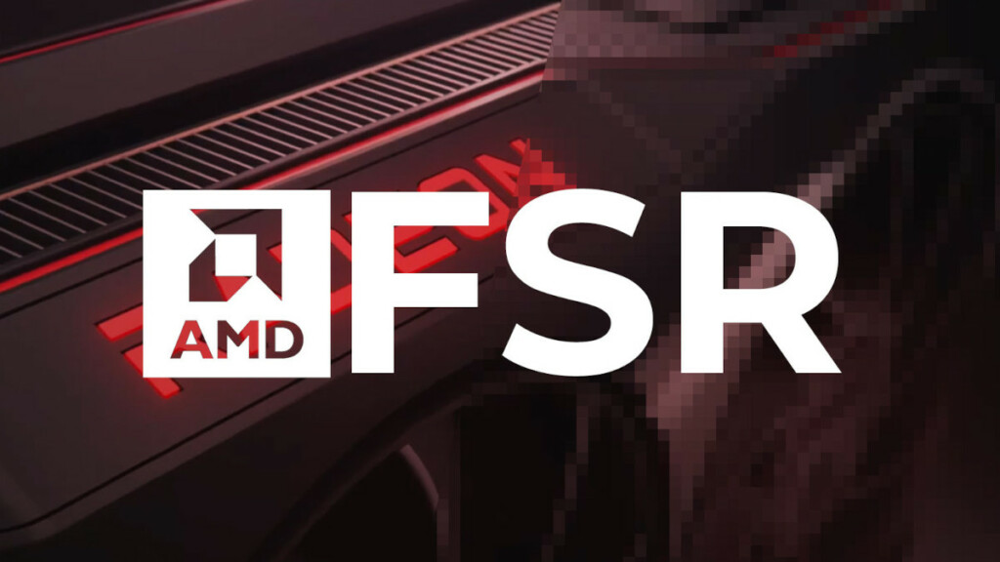
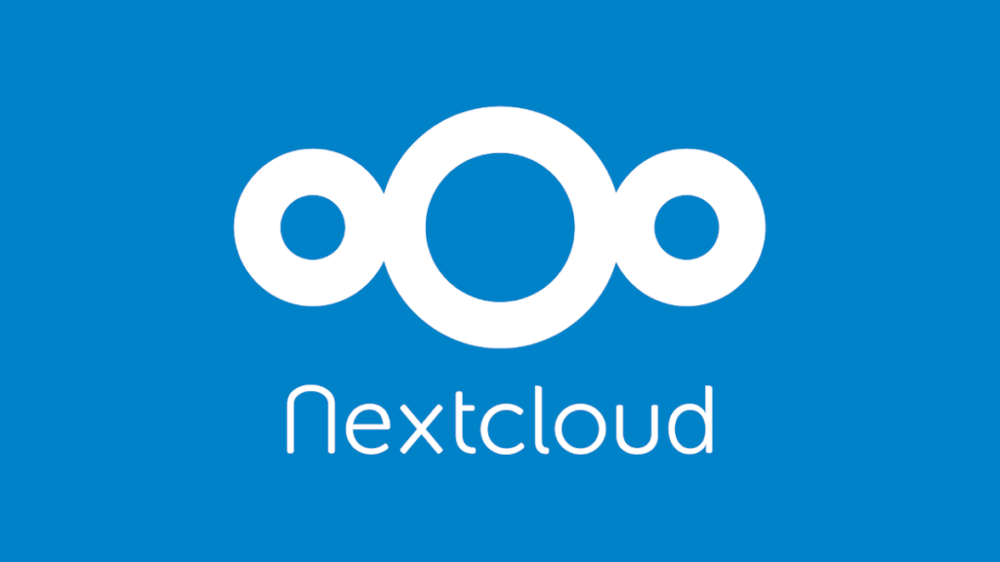
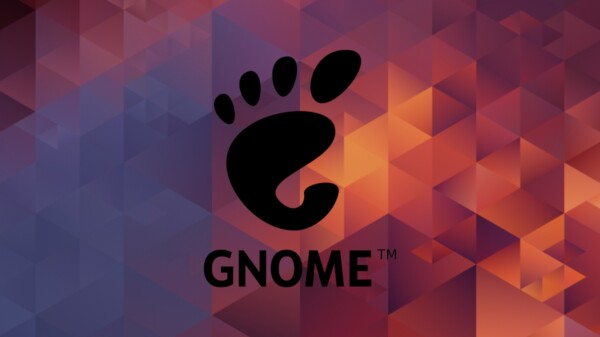

Hola, ¿qué estás buscando?

Actualidad
Seis meses después de la presentación oficial, FSR 3 ha empezado a llegar a algunos juegos y AMD ha anunciado la próxima publicación del...

Actualidad
Nextcloud Hub 6 es la nueva versión de la solución integral de productividad en la nube, que en esta ocasión llega con mejoras en...



Actualidad
Ya está aquí GNOME 45, una nueva versión del entorno de escritorio «enfocada en refinar tus interacciones diarias, mejorar el rendimiento y hacer que la...